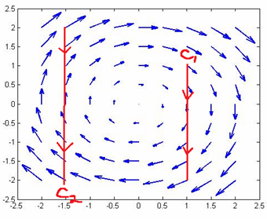

Homework Section 16.2
-
Question 1
Evaluate the line integral over the given curve `C`:
- `int_C 8sqrt(x) ds`, `C`: `x=t^2`, `y=t`, `0 <= t <= 2`
- `int_C x^4y \ ds`, `C` is the upper half of the circle `x^2+y^2=16`
- `int_C (xy+ln y) dx`, `C` is the arc of the parabola `x=y^2` from (1, 1) to (9, 3)
- `int_C (x+y) dx+xy \ dy`, `C` consists of line segments from (0, 0) to (1, 1) and from (1, 1) to (2, 3)
- `int_C y e^(xz) ds`, `C` is the line segment from (0, 0, 0) to (2, 1, 3)
-
Question 2
Compute the line integral `int_C bb(F) * d bb(r)`, where `C` is given by the vector function `bb(r)(t)`.
- `bb(F)(x,y)=xy^2 bb(i) - x sqrt(y) bb(j)`, `bb(r)(t)=t^3 bb(i) + t^2 bb(j)`, `0 <= t <= 1`
- `bb(F)(x,y,z)=cos(x) bb(i) + 2y bb(j) + xz bb(k)`, `bb(r)(t)=t^2 bb(i) - t^3 bb(j) + 4t bb(k)`, `0 <= t <= 1`
-
Question 3
Find the work done by the force field `bb(F)(x,y)=xy bb(i) - y bb(j)` in moving a particle along a quarter of the unit circle from (1, 0) to (0, 1).
-
Question 4
The figure shows a vector field `bb(F)` and two line segments `C_1` and `C_2`. Determine if the respective line integrals of `bb(F)` over `C_1` and `C_2` are positive, negative, or zero. Explain your answers.
